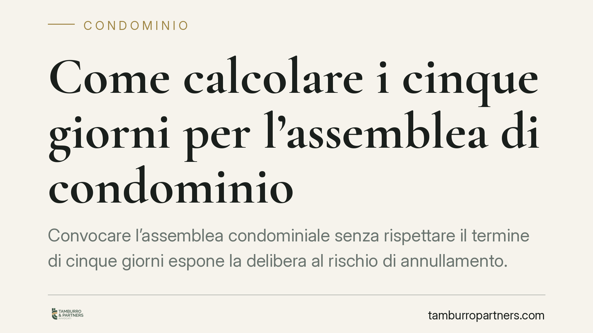

Come calcolare i cinque giorni per l'assemblea di condominio
Convocare l'assemblea condominiale senza rispettare il termine di cinque giorni espone la delibera al rischio di annullamento. Il punto critico è il calcolo: va fatto a ritroso dalla data dell'adunanza e conta la ricezione dell'avviso, non la spedizione. Un errore di un solo giorno può compromettere la validità delle decisioni. Vediamo il metodo corretto, con esempi, e cosa prevede la giurisprudenza recente.

Il termine: cosa dice la norma
L'art. 66, terzo comma, disp. att. cod. civ. stabilisce che l'avviso di convocazione deve essere comunicato ai condòmini almeno cinque giorni prima della data fissata per l'adunanza in prima convocazione.
Il termine è previsto a tutela della partecipazione informata: i cinque giorni servono a garantire a ciascun condòmino un intervallo minimo per prendere visione dell'ordine del giorno, documentarsi e organizzarsi per intervenire o delegare.
La violazione di questo termine non rende la delibera nulla, ma annullabile. La distinzione è rilevante: la delibera annullabile resta efficace finché non viene impugnata.
La natura recettizia dell'avviso
L'avviso di convocazione è un atto recettizio. Ai sensi dell'art. 1335 cod. civ., si considera conosciuto nel momento in cui giunge all'indirizzo del destinatario, salvo che questi provi di essere stato, senza sua colpa, nell'impossibilità di averne notizia.
Ne deriva una conseguenza pratica fondamentale: ciò che conta è la data di ricezione, non la data di spedizione. L'amministratore che spedisce l'avviso a ridosso della scadenza se ne assume il rischio.
Sul punto la Corte di Cassazione (sent. n. 18635/2021 e, più di recente, n. 20535/2025) ha chiarito che, in caso di plico non ritirato, rileva la data in cui l'avviso di giacenza è reso disponibile al destinatario presso l'ufficio postale, momento in cui si presume la conoscibilità ex art. 1335 cod. civ.
Come si calcola: il metodo a ritroso
Il computo segue le regole dell'art. 155 cod. proc. civ., richiamato dall'art. 2963 cod. civ.: si esclude il giorno iniziale (dies a quo) e si conta a ritroso.
Nel termine a ritroso, il giorno di partenza è quello dell'assemblea, che va escluso. Si risale quindi indietro di cinque giorni interi, che devono intercorrere prima dell'adunanza.
Esempio. Assemblea fissata per lunedì 20. Il giorno 20 si esclude. I cinque giorni interi che devono precedere l'adunanza sono: 15, 16, 17, 18, 19.
Perché il requisito sia soddisfatto, l'avviso deve pervenire al più tardi il giorno 15: in questo modo, tra la ricezione (15) e l'assemblea (20) restano cinque giorni pieni.
Verifica con l'esempio opposto. Se l'avviso perviene il 16, i giorni che precedono l'assemblea sono 16, 17, 18, 19: solo quattro giorni. Il termine non è rispettato e la convocazione è viziata.
Il metodo è quindi uniforme: la ricezione va collocata in modo che rimangano cinque giorni interi prima dell'adunanza. Ricezione il 15 → cinque giorni (sufficiente); ricezione il 16 → quattro giorni (insufficiente).
Il quinto giorno che cade di festivo
Un'ulteriore insidia riguarda i termini a ritroso quando l'ultimo giorno utile cade di sabato o in un festivo. A differenza dei termini ordinari, nei termini computati a ritroso la proroga al giorno successivo rischia di ridurre l'intervallo di tutela invece di ampliarlo.
Per evitare contestazioni, l'orientamento prudente è anticipare la ricezione, in modo che i cinque giorni interi restino comunque garantiti.
Implicazioni pratiche per l'amministratore
Per l'amministratore il margine di errore è ridotto. Una delibera adottata a seguito di convocazione tardiva è annullabile su impugnazione dei condòmini legittimati.
Ai sensi dell'art. 1137 cod. civ., possono impugnare i condòmini assenti, dissenzienti e astenuti, entro trenta giorni decorrenti, per gli assenti, dalla comunicazione del verbale e, per i presenti, dalla data della deliberazione.
Il condòmino che ha votato a favore, invece, non è legittimato a impugnare.
Cosa fare in concreto
- Fissate la data dell'assemblea e contate a ritroso: escludete il giorno dell'adunanza e assicuratevi che l'avviso pervenga al più tardi al quinto giorno intero precedente.
- Scegliete mezzi tracciabili: raccomandata A/R, PEC o consegna a mani con firma per ricevuta, per documentare la data di ricezione.
- Ragionate sulla ricezione, mai sulla spedizione: calcolate i tempi di recapito e, in caso di PEC, conservate le ricevute di accettazione e consegna.
- Anticipate l'invio in presenza di festivi o sabati a ridosso della scadenza, per evitare incertezze sul computo.
- Archiviate le prove di avvenuta comunicazione per ciascun condòmino, utili in caso di impugnazione.
Consigliamo, in caso di convocazioni su ordini del giorno complessi o delibere a maggioranza qualificata, di verificare preventivamente la regolarità del procedimento, poiché un vizio formale può travolgere decisioni sostanzialmente corrette.
Contributo informativo a cura di Tamburro & Partners Avvocati – Avv. Giuseppe Tamburro. Non costituisce parere legale.
Ogni condominio ha una storia a sé.
Se gestisci un'amministrazione e vuoi un confronto su una specifica questione condominiale, scrivi allo studio. Ti rispondiamo entro un giorno lavorativo.